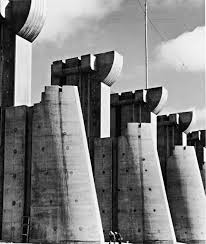

Margaret Bourke-White è stata una fotografa e documentarista americana.
È nata a New York il 14 giugno 1904. Si è interessata alla fotografia mentre era studente alla Cornell University. Fu allieva di Clarence H. White alla Columbia University e più tardi aprì il suo studio a Cleveland dove si specializzò in fotografia architettonica. Fu la prima donna corrispondente di guerra (e la prima ad essere autorizzata a lavorare in zone di combattimento nella Seconda guerra mondiale).
Nel 1929 ha inizio la sua collaborazione con la rivista «Fortune» e la sua nuova ambizione è di essere la “migliore” tra le fotogiornaliste. È la prima donna fotografa a lavorare per la rivista Life, diretta da Henry Luce. Una sua fotografia era sulla copertina del primo numero, il 23 novembre 1936, quella dell’imponente diga di Fort Peck nel Montana.

Il suo obiettivo in questi anni è infatti sempre più vicino all’emergenza sociale degli Stati Uniti; sua, ad esempio, è la celebre fotografia della fila di persone di colore, in attesa della distribuzione di un pasto, sovrastati dalla pubblicità di una automobile con a bordo la tipica famiglia americana wasp e la frase “World’s highest standard of living”.
Era una donna di sinistra che ha fatto diversi viaggi nell'ex Unione Sovietica (URSS). Nel 1930 fu la prima fotografa occidentale autorizzata a fotografare l'industria sovietica. Nel 1931 pubblicò "Occhi sulla Russia". Profondamente sensibilizzata dalla depressione del paese, si è interessata alla politica.
Sposò Erskine Caldwell nel 1939 e furono gli unici giornalisti stranieri nell'URSS occupata dopo l'invasione dell'esercito tedesco nel 1941.
Le fotografie di Bourke-White mostrano una chiesa ortodossa e una protestante nel centro di Mosca. Riesce anche a ritrarre Stalin sorridente e bonario.
Nella primavera del 1945, viaggiò attraverso una Germania distrutta con il generale George S. Patton. Quando arrivò a Buchenwald, il famigerato campo di concentramento, dopo aver registrato i resti, disse: "Usare una macchina fotografica era quasi un sollievo. Metteva una leggera barriera tra me e l'orrore di fronte a me. Dopo la guerra, ha prodotto un libro intitolato “Dear Fatherland, Rest Quietly", un progetto che l'ha aiutata a capire la brutalità di cui era stata testimone durante e dopo la guerra.
Dopo la Seconda guerra mondiale, si è interessata alla campagna di Gandhi per la nonviolenza.
Al ritorno dalla guerra non mancano i libri con le sue fotografie: They called it Purple heart Valley, sulla campagna d’Italia e Dear Fatherland, Rest Quietly.
Margaret non consente alla sua fama ormai mondiale di indurla a riposare e continua a fotografare il mondo. Anche per questo non le si assegnano servizi fotografici già previsti, ma ne vengono pensati appositamente per lei.
Nel 1947 è in Pakistan e in India, nuovo centro di tensioni nel momento della nascita dei due Stati: intervista e fotografa Ghandi solo poche ore prima che venga ucciso. Nel 1950 è in Sud Africa: descrive l’apartheid e scende due miglia sottoterra per ritrarre il lavoro dei minatori d’oro; è in Corea subito dopo la firma dell’armistizio, a documentare la guerriglia e la popolazione civile ancora una volta in guerra. È sempre prima, sempre la migliore, ogni suo libro un successo.
Il morbo di Parkinson inizia il suo corso. Nel 1957 firma il suo ultimo servizio per «Life».
Nel 1963 scrive l’autobiografia Portrait of myself. Gli ultimi anni vive ritirata nella sua casa in Connecticut, con i pochi soldi messi da parte spesi per le cure mediche.
Morirà sola, ma non dimenticata, a Darine nel 1971, a sessantasette anni.